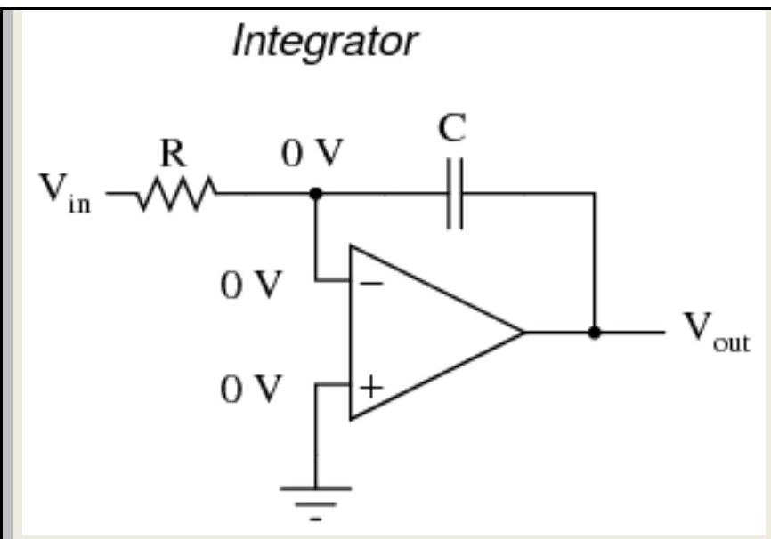
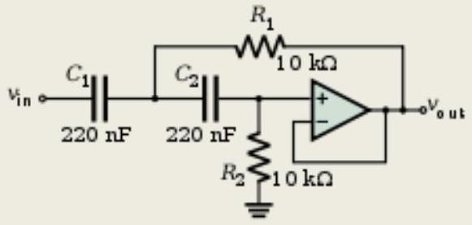
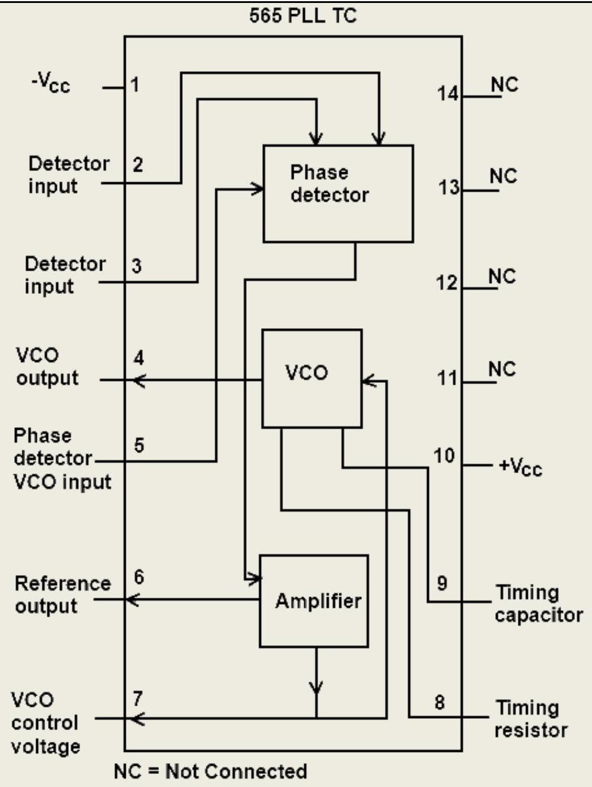

CHAPTER-5. APPLICATION OF OPERATIONAL AMPLIFIER & TIMER CIRCUITS .,
5.1 Discuss the summing scaling and averaging of inverting and non-inverting amplifiers Summing amplifier using opamp.
Summing amplifier is a type operational amplifier circuit which can be used to sum signals. The sum of the input signal is amplified by a certain factor and made available at the output.Any number of input signal can be summed using an opamp. The circuit shown below is a three input summing amplifier in the inverting mode.
Summing amplifier circuit
In the circuit, the input signals $\mathrm{Va}, \mathrm{Vb}, \mathrm{Vc}$ are applied to the inverting input of the opamp through input resistors $\mathrm{Ra}, \mathrm{Rb}, \mathrm{Rc}$. Any number of input signals can be applied to the inverting input in the above manner. Rf is the feedback resistor.Non inverting input of the opamp is grounded using resistor Rm. RL is the load resistor. By applying kirchhoff's current law at not V2 we get,
Since the input resistance of an ideal opamp is close to infinity and has infinite gain. We can neglect lb & V2 There for la+lb+Ic = If $\qquad$ .(1)
Equation (1) can be rewritten as
Neglecting Vo, we get
If resistor Ra , Rb , Rc has same value ie; $\mathrm{Ra}=\mathrm{Rb}=\mathrm{Rc}=\mathrm{R}$, then equation (2) can be written as
If the values of Rf and R are made equal , then the equation becomes,
Averaging Circuit :
An averaging circuit can be made from the above circuit by making the all input resistor equal in value ie; Ra = Rb = Rc = R and the gain must be selected such that if there are m inputs, then Rf/R must be equal to 1/m.
Scaling amplifier :
In a scaling amplifier each input will be multiplied by a different factor and then summed together. Scaling amplifier is also called a weighted amplifier. Here different values are chosen for Ra, Rb and Rc. The governing equation is $\mathrm{Vo}=-((\mathrm{Rf} / \mathrm{Ra}) \mathrm{Va}+(\mathrm{Rf} / \mathrm{Rb}) \mathrm{Vb}+(\mathrm{Rf} / \mathrm{Rc}) \mathrm{Vc})$.
Summing amplifier in non inverting configuration.
Summing amplifier in non inverting configuration
A non inverting summing amplifier circuit with three inputs are shown above. The voltage inputs Va, Vb and Vc are applied to non inverting input of the opamp. Rf is the feedback resistor. The output voltage of the circuit is governed by the equation;
Configuration.
5.2 Explain DC & AC Amplifies using OP-AMP.
One of the most common application problems encountered is the failure to provide a dc return path for bias current in ac-coupled operational- or instrumentation-amplifier circuits. In Figure 1, a capacitor is connected in series with the noninverting (+) input of an op amp to ac couple it, an easy way to block dc voltages that are associated with the input voltage ( $\mathrm{V}_{\text {IN }}$ ). This should be especially useful in high-gain applications, where even a small dc voltage at an amplifier's input can limit the dynamic range, or even result in output saturation. However, capacitively coupling into a high-impedance input, without providing a dc path for current flowing in the + input, will lead to trouble!
5.3 Explain the operation of instrumentation amplifier using Transducer Bridge .
The resistive transducer bridge is a network of resistors whose resistance varies due to changes in some physical condition. For example, Thermistors change their resistance with temperature and Light Dependent Resistors change their resistance to change in light intensity. By making such a bridge as a part of the circuit, it is possible to produce an electrical signal proportional to the change in the physical quantity being measured. Such an electrical signal can be amplified and used to monitor and control the physical process. An instrumentation amplifier can be constructed with a transducer bridge connected to one of its input terminals, as shown in the figure below.
Let the resistance of the transducer device in the resistive bridge be $R_{T}$ and the change in its resistance be $\Delta R$. The effective resistance of the transducer device is $R_{T} \pm \Delta R$. The resistive bridge is supplied with a $D C$ voltage, $V_{d c}$.
When the bridge is balanced, i.e. at some reference condition of the physical quantity being measured, we get,
$\mathrm{V}_{\mathrm{a}}=\mathrm{V}_{\mathrm{b}} \quad$ and $\quad \mathrm{R}_{\mathrm{A}}(\mathrm{Vdc}) /\left(\mathrm{R}_{\mathrm{A}}+\mathrm{R}_{\mathrm{T}}\right)=\mathrm{R}_{\mathrm{B}}(\mathrm{Vdc}) /\left(\mathrm{R}_{\mathrm{B}}+\mathrm{R}_{\mathrm{C}}\right)$
Under this condition, the differential input to the instrumentation amplifier is $\quad V_{\text {Diff }}=V_{b}-V_{a}=0$
Thus, the output of the amplifier is zero. Consequently, the display device connected at the output displays the reference value of the physical quantity being measured. The reference condition is generally chosen by the designer and it depends on the device characteristics of the transducer, the type of physical quantity being measured and the type of the application.
When there is a change in the physical quantity being measured, the voltage $V_{a}$ will no longer be equal to $V_{b}$. This is because the resistance of the transducer device changes from $R_{T}$ to ( $R_{T} \pm \Delta R$ ). This produces a differential input for the instrumentation amplifier and the output of the amplifier will no longer be zero.
The resistances $R_{B}$ and $R_{C}$ are constant and hence the voltage $V_{B}$ remains same as before, i.e. $V_{b}=R_{B}(V dc) /\left(R_{B}+R_{C}\right)$
But the voltage $\mathrm{V}_{\mathrm{a}}$ changes due to the change in resistance of the transducer device and is now given as,
The differential voltage $\mathrm{V}_{\text {Diff }}$ is,
If all the resistances in the circuit are chosen to be of same value, i.e. $R_{A}=R_{B}=R_{C}=R_{T}=R$
If the value of $\mathrm{V}_{\text {Diff }}$ is positive, it indicates that $\mathrm{V}_{\mathrm{b}}$ is greater than $\mathrm{V}_{\mathrm{a}}$.
The output of the instrumentation amplifier is given as, $\quad V_{0}=\left(R_{3} / R_{2}\right) V_{d}$
As the change in resistance $\Delta R \ll 2 R, V_{0}$ can be written as, $V_{0}=\left(R_{3} / R_{2}\right)[\Delta R / 4 R](V d c)$
From the above equation, it can be noted that the output depends on the change in the resistance $\Delta R$. The display can be calibrated in terms of the units of the physical quantity being measured.
5.4 Discuss the integrator and differentiator using op-amp.
By introducing electrical reactance into the feedback loops of op-amp amplifier circuits, we can cause the output to respond to changes in the input voltage over time. Drawing their names from their respective calculus functions, the integrator produces a voltage output proportional to the product (multiplication) of the input voltage and time; and the differentiator (not to be confused with differential) produces a voltage output proportional to the input voltage's rate of change.
Capacitance can be defined as the measure of a capacitor's opposition to changes in voltage. The greater the capacitance, the more the opposition. Capacitors oppose voltage change by creating current in the circuit: that is, they either charge or discharge in response to a change in applied voltage. So, the more capacitance a capacitor has, the greater its charge or discharge current will be for any given rate of voltage change across it. The equation for this is quite simple:

The $d v / d t$ fraction is a calculus expression representing the rate of voltage change over time. If the DC supply in the above circuit were steadily increased from a voltage of 15 volts to a voltage of 16 volts over a time span of 1 hour, the current through the capacitor would most likely be very small, because of the very low rate of voltage change ( $\mathrm{dv} / \mathrm{dt}=1$ volt / 3600 seconds). However, if we steadily increased the DC supply from 15 volts to 16 volts over a shorter time span of 1 second, the rate of voltage change would be much higher, and thus the charging current would be much higher ( 3600 times higher, to be exact). Same amount of change in voltage, but vastly different rates of change, resulting in vastly different amounts of current in the circuit.
To put some definite numbers to this formula, if the voltage across a $47 \mu \mathrm{~F}$ capacitor was changing at a linear rate of 3 volts per second, the current "through" the capacitor would be $(47 \mu \mathrm{~F})(3 \mathrm{~V} / \mathrm{s})=141 \mu \mathrm{A}$.
We can build an op-amp circuit which measures change in voltage by measuring current through a capacitor, and outputs a voltage proportional to that current:
The right-hand side of the capacitor is held to a voltage of 0 volts, due to the "virtual ground" effect. Therefore, current "through" the capacitor is solely due to change in the input voltage. A steady input voltage won't cause a current through C, but a changing input voltage will.
Capacitor current moves through the feedback resistor, producing a drop across it, which is the same as the output voltage. A linear, positive rate of input voltage change will result in a steady negative voltage at the output of the op-amp. Conversely, a linear, negative rate of input voltage change will result in a steady positive voltage at the output of the op-amp. This polarity inversion from input to output is due to the fact that the input signal is being sent (essentially) to the inverting input of the op-amp, so it acts like the inverting amplifier mentioned previously. The faster the rate of voltage change at the input (either positive or negative), the greater the voltage at the output.
The formula for determining voltage output for the differentiator is as follows:
Applications for this, besides representing the derivative calculus function inside of an analog computer, include rate-of-change indicators for process instrumentation. One such rate-of-change signal application might be for monitoring (or controlling) the rate of temperature change in a furnace, where too high or too low of a temperature rise rate could be detrimental. The DC voltage produced by the differentiator circuit could be used to drive a comparator, which would signal an alarm or activate a control if the rate of change exceeded a pre-set level.
In process control, the derivative function is used to make control decisions for maintaining a process at setpoint, by monitoring the rate of process change over time and taking action to prevent excessive rates of change, which can lead to an unstable condition. Analog electronic controllers use variations of this circuitry to perform the derivative function. On the other hand, there are applications where we need precisely the opposite function, called integration in calculus. Here, the op-amp circuit would generate an output voltage proportional to the magnitude and duration that an input voltage signal has deviated from 0 volts. Stated differently, a constant input signal would generate a certain rate of change in the output voltage: differentiation in reverse. To do this, all we have to do is swap the capacitor and resistor in the previous circuit:
As before, the negative feedback of the op-amp ensures that the inverting input will be held at 0 volts (the virtual ground). If the input voltage is exactly 0 volts, there will be no current through the resistor, therefore no charging of the capacitor, and therefore the output voltage will not change. We cannot guarantee what voltage will be at the output with respect to ground in this condition, but we can say that the output voltage will be constant.
However, if we apply a constant, positive voltage to the input, the op-amp output will fall negative at a linear rate, in an attempt to produce the changing voltage across the capacitor necessary to maintain the current established by the voltage difference across the resistor. Conversely, a constant, negative voltage at the input results in a linear, rising (positive) voltage at the output. The output voltage rate-of-change will be proportional to the value of the input voltage.
The formula for determining voltage output for the integrator is as follows:
or
Where, $\mathrm{c}=$ Output voltage at start time ($\mathrm{t}=0$)
5.5 Define active filter and describe the filter design of fast order low Pass Butterworth filter.
An active filter is a type of analog electronic filter that uses active components such as an amplifier. Amplifiers included in a filter design can be used to improve the performance and predictability of a filter,[1] while avoiding the need for inductors (which are typically expensive compared to other components). An amplifier prevents the load impedance of the following stage from affecting the characteristics of the filter. An active filter can have complex poles and zeros without using a bulky or expensive inductor. The shape of the response, the Q (quality factor), and the tuned frequency can often be set with inexpensive variable resistors. In some active filter circuits, one parameter can be adjusted without affecting the others.[1]
Using active elements has some limitations. Basic filter design equations neglect the finite bandwidth of amplifiers. Available active devices have limited bandwidth, so they are often impractical at high frequencies. Amplifiers consume power and inject noise into a system. Certain circuit topologies may be impractical if no DC path is provided for bias current to the amplifier elements. An active filter is a type of analog electronic filter that uses active components
5.6 Describe the filter design of fast order High Pass Butterworth filter.
The Butterworth filter is a type of signal processing filter designed to have as flat a frequency response as possible in the passband. It is also referred to as a maximally flat magnitude filter.
Butterworth stated that: "An ideal electrical filter should not only completely reject the unwanted frequencies but should also have uniform sensitivity for the wanted frequencies".
Such an ideal filter cannot be achieved but Butterworth showed that successively closer approximations were obtained with increasing numbers of filter elements of the right values. At the time, filters generated substantial ripple in the passband, and the choice of component values was highly interactive. Butterworth showed that a low pass filter could be designed whose cutoff frequency was normalized to 1 radian per second and whose frequency response (gain) was
where $\omega$ is the angular frequency in radians per second and $n$ is the number of poles in the filter-equal to the number of reactive elements in a passive filter. If $\omega=1$, the amplitude response of this type of filter in the passband is $1 / \sqrt{2} \approx 0.707$, which is half power or -3 dB. Butterworth only dealt with filters with an even number of poles in his paper. He may have been unaware that such filters could be designed with an odd number of poles. He built his higher order filters from 2-pole filters separated by vacuum tube amplifiers. His plot of the frequency response of 2, 4, 6, 8, and 10 pole filters is shown as A, B, C, D, and E in his original graph.
5.7 Explain the concept of Zero-Crossing Detector using Op-Amp
Zero crossing detector(ZCD) is a voltage comparator that switches the output between + Vsat and -Vsat (Vsat: Saturation voltage almost equal to 14 V ) when the input crosses zero reference voltage. Then what is a comparator? In simple words comparators are basic operational amplifier circuits that compare two voltages simultaneously and switches the output according to the comparison. We can say zero crossing detection circuit is a comparator example. We will discuss in detail about comparator in our upcoming articles. Inverting zero cross detector circuit schematic using op amp 741 IC is shown below along with working, input output wave forms.
Zero crossing circuit diagram
ZCD Input and Output Waveform
Working of zero crossing detector circuit
- Working of ZCD can be easily understood if you know the working of a basic opamp comparator.
- In ZCD, we are setting one of the inputs as zero i.e. zero reference voltage.
- The output is driven into -Vsat when the input signal passes through zero to positive direction.
- Conversely, when input signal passes through zero to negative direction, the output switches to +V sat.
Zero crossing detector applications
ZCD circuit can be used to check whether the op-amp is in good condition. Zero crossing detectors can be used as frequency counters and for switching purposes in power electronics circuits.ZCD is a basic op amp circuit.
5.8 Draw the block diagram and operation of IC 555 timer &IC 565 PLL& its applications.
The 555 timer IC is an integrated circuit (chip) used in a variety of timer, pulse generation, and oscillator applications. The 555 can be used to provide time delays, as an oscillator, and as a flip-flop element. Derivatives provide up to four timing circuits in one package.
The 555 timer IC is an integrated circuit (chip) used in a variety of timer, pulse generation, and oscillator applications. The 555 can be used to provide time delays, as an oscillator, and as a flip-flop element. Derivatives provide up to four timing circuits in one package.
Introduced in 1971 by Signetics, the 555 is still in widespread use due to its ease of use, low price, and stability. It is now made by many companies in the original bipolar and also in low-power CMOS types. As of 2003, it was estimated that 1 billion units are manufactured every year.[1]
Modes
The 555 has three operating modes:
- Monostable mode: In this mode, the 555 functions as a "one-shot" pulse generator. Applications include timers, missing pulse detection, bouncefree switches, touch switches, frequency divider, capacitance measurement, pulse-width modulation (PWM) and so on.
- Astable (free-running) mode: The 555 can operate as an oscillator. Uses include LED and lamp flashers, pulse generation, logic clocks, tone generation, security alarms, pulse position modulation and so on. The 555 can be used as a simple ADC, converting an analog value to a pulse length. E.g. selecting a thermistor as timing resistor allows the use of the 555 in a temperature sensor: the period of the output pulse is determined by the temperature. The use of a microprocessor based circuit can then convert the pulse period to temperature, linearize it and even provide calibration means.
- Bistable mode or Schmitt trigger: The 555 can operate as a flip-flop, if the DIS pin is not connected and no capacitor is used. Uses include bounce-free latched switches.
IC 565 PLL
A PLL is also available as an integrated circuit IC. IC 565 PLL can be used for FM detection.
Figure (a) shows the circuit diagram of an FM detector using 565 PLL.
Figure (a): Circuit Diagram for an FM Detector Using IC 565 PLL
Internal Block Diagram of IC 565
The internal block diagram shows that IC 565 PLL consists of phase detector, VCO, and amplifier. The amplifier also functions as the low pass filter. This is a 14 pin dual in line package.
Figure (b): Internal Block Diagram of IC 565 PLL
In figure (b), notice that PLL IC consists of two power supply pins marked $\pm \mathrm{Vcc}$. The positive terminal of the Vcc is connected to pin number 10, and the negative (ground) terminal of Vcc is connected to pin number 1. The output signal to the phase detector is applied to pin numbers 2 and 3 . The VCO output is applied to the phase detector through pin number 5 . The output of the phase detector is internally connected to the amplifier (low-pass filter).
The output or the phase detector is low-pass filtered and amplified by the amplifier stage. The Output or the amplifier is the control voltage that is applied to VCO to force it to track the incoming frequency. The control voltage is also available at pin number 7. This is the output signal. In the ease of FM demodulator, the signal at pin number 7 is the modulating signal. The amplifier also generates an output at pin number 6for reference purposes.
The VCO gets its control voltage internally from the amplifier and its output at pin number 4. The VCO output should be given to the phase detector through pin number 5 . It is customary to short pin numbers 4 and 5 so that the VCO output is applied directly to the phase detector. The external resistor and capacitor can set the free-running frequency of the VCO. The resistor and capacitor are called the timing resistor and the timing capacitor. The timing resistor is connected at pin number 8, and the timing capacitor is connected at pin number 9.
Pin numbers $11, 12, 13$, and 14 are not connected because they do not have any internal circuitry with them. These are marked as NC in Figure (b). These pins are there because they are connected to IC.
Circuit Description
Figure (a) shows the circuit external to the IC 565 PLL for FM detection. The circuit shown in this figure is a general circuit. The choice of the timing components, resistor $R_{0}$ and capacitor $C_{0}$ decides the various parameters and the free-running frequency of PLL. Accordingly, the values of other components are also chosen.
In Figure (a), only a few components are externally connected to IC. The power supply, $\mathrm{V}_{\mathrm{cc}}$, is connected between pin numbers 1 and 10 , with $+V_{c c}$ applied at pin number 10 . The timing resistor $R_{o}$ is connected to pin number 8 , and the timing capacitor, $\mathrm{C}_{0}$ is connected to pin number 9 . The VCO output, which is available at pin number 4 is applied to phase-detector input at pin number 5 . Pin number 4 is shorted with pin number 5 as no external component is required in this case.
The input FM signal, $\mathrm{V}_{\mathrm{i}}$, is applied to pin number 2 through the coupling capacitor $\mathrm{C}_{\mathrm{c}}$. A part of this signal is also applied to pin number 3 through the potential divider network, consisting of $R_{2}, R_{3}$, and $R_{4}$. The dc power supply is also provided to the input pins 2 and 3 through $R_{1}$ from $+V_{c c}$ supply. The capacitor $C_{2}$ is used to filter out an AC ripple, if present in the DC supply.
The demodulated FM signal is nothing but the control signal, which is available at pin number 7. Therefore, the signal available at pin number 7 is the required modulating signal.
Parameters of Interest
The manufacturers of IC chips provide information related to the design of the circuit using their IC chips. They provide the design equations for important and key parameters of the circuit in terms of the circuit components and known circuit Conditions.
Some typical design equations for various parameters related to PLL operation are:
-
Free-running frequency ($\mathrm{f}_{\mathrm{o}}$). The free-running frequency of VCO may he calculated as:
$$f_{0}=0.3 / R_{0} C_{0}$$For $\mathrm{C}_{0}=1.5 \mathrm{nF}$ and $\mathrm{R}_{0}=20 \mathrm{~K} \Omega$, the free-running frequency is calculated as:$$\begin{gathered} \mathrm{f}_{0}=0.3 /\left(20 \times 10^{3}\right)\left(1.5 \times 10^{-9}\right) \\ \mathrm{f}_{0}=10 \mathrm{KHz} \end{gathered}$$Thus, for the central frequency of an FM signal to be 10 kHz , a resistor $420 \mathrm{~K} \Omega$ and a capacitor of 1.5 nF can be used as timing components.
-
Loop gain
The loop gain of PLL decides the amount of phase change among the input signals of the phase detector for a change in the input signal frequency. The loop may be defined as:$$A_{L}=K_{D} K_{o} \text { per second }$$where
$\mathrm{K}_{\mathrm{D}}=$ Phase detector sensitivity in volt/radians
$\mathrm{K}_{0}=$ Oscillator sensitivity in radians/see-volt
A typical formula given by a manufacturer nay be given is:$$\mathrm{K}_{\mathrm{D}} \mathrm{~K}_{\mathrm{O}}=33.6 \mathrm{fo}_{\mathrm{o}} / \mathrm{V}_{\mathrm{c}}$$Where
$f_{0}=$ free-running frequency of $V_{c o}$ in Hz
$\mathrm{V}_{\mathrm{c}}=$ Supply voltage
if $\mathrm{V}_{\mathrm{c}}=12 \mathrm{~V}$ and $\mathrm{f}=10 \mathrm{KHz}$$$\begin{aligned} & \mathrm{K}_{D} \mathrm{~K}_{o}= 33.6 \times 10 \times 10^{3} \mathrm{f}_{0} / 12 \\ & \mathrm{~K}_{\mathrm{D}} \mathrm{~K}_{\mathrm{o}}=28 \times 10^{3} \end{aligned}$$Therefore, the loop given for the given values of $V_{c}$ and $f_{0}$ is 28,000. -
Hold-in range
The hold-in range may be calculated as:$$f_{h}= \pm 8 f_{0} / V_{c}$$Where
$\mathrm{f}_{0}=$ free running of VCO
$\mathrm{V}_{\mathrm{c}}=$ supply voltage
For $\mathrm{f}_{0}=10 \mathrm{KHz}$ and $\mathrm{V}_{\mathrm{c}}=12 \mathrm{~V}$, the hold-in range is calculated from above Equation as:$$\begin{gathered} f_{h}= \pm 8 \times 10 \times 10^{3} / 12 \\ f_{h}= \pm 6.67 \mathrm{KHz} \end{gathered}$$Therefore, for the given values, the loop will remain locked over a frequency range of $\pm 6.67 \mathrm{KHz}$ after it is locked initially.
5.9 Explain the working of Wein Bridge Oscillator using operational Amplifier.
Wien bridge oscillator is an audio frequency sine wave oscillator of high stability and simplicity. Before that let us see what is oscillator? An oscillator is a circuit that produces periodic electric signals such as sine wave or square wave. The application of oscillator includes sine wave generator, local oscillator for synchronous receivers etc.
Here we are discussing wein bridge oscillator using 741 op amp IC. It is a low frequency oscillator. The op-amp used in this oscillator circuit is working as non-inverting amplifier mode. Here the feedback network need not provide any phase shift. The circuit can be viewed as a wien bridge with a series RC network in one arm and parallel RC network in the adjoining arm. Resistors Ri and Rf are connected in the remaining two arms.
Also see:
- RC phase shift oscillator using 741 op amp
- RC phase shift oscillator using transistor
Wien bridge oscillator Circuit Diagram
Components Required
- Resistors ( $1 \mathrm{~K} \Omega, 1.5 \mathrm{~K} \Omega \times 2$ )
- Potentiometer($4.7 \mathrm{~K} \Omega$)
- Capacitor ($0.1 \mu \mathrm{F} 2$)
- 741 Op amp
Output Waveform
Working of Wein bridge Oscillator
- The feedback signal in this oscillator circuit is connected to the non-inverting input terminal so that the opamp works as a non-inverting amplifier.
- The condition of zero phase shift around the circuit is achieved by balancing the bridge, zero phase shift is essential for sustained oscillations.
- The frequency of oscillation is the resonant frequency of the balanced bridge and is given by the expression fo = $1 / 2 \pi R C$
- At resonant frequency ( fo), the inverting and non-inverting input voltages will be equal and "in-phase" so that the negative feedback signal will be cancelled out by the positive feedback causing the circuit to oscillate.
- From the analysis of the circuit, it can be seen that the feedback factor $\beta=1 / 3$ at the frequency of oscillation. Therefore for sustained oscillation, the amplifier must have a gain of 3 so that the loop gain becomes unity.
- For an inverting amplifier the gain is set by the feedback resistor network Rf and Ri and is given as the ratio Rf/Ri.
Design
The required frequency of oscillation fo = 1kHz
we have,
Take C = 0.01μF, then R = 1.6kΩ (Use 1.5kΩ standard)
Gain of the amplifier section is given by,
Take Ri = 1kΩ, then Rf = 2.2kΩ (Use 4.7kΩ Potentio meter for fine corrections)
Wien bridge oscillator Frequency calculator
R1 and C1 in the series arm and R2 C2 in parallel arm of feedback circuit
Enter the Value of Resistor, R1 :in $\Omega$
Enter the Value of Capacitor, C1 :in Farads
Enter the Value of Resistor, R2 :in $\Omega$
Enter the Value of Capacitor, C2 :in Farads
Frequency of oscillation, F :in Hz
5.10 Explain Current to voltage Convertor using Operational Amplifier:
The current to voltage converter was presented as a special case of the inverting amplifier in which an input current is converted into a proportional output voltage. One of the most common uses of the current to voltage converter is in digital to analog circuits and in sensing current through photo detectors such as photocells, photodiodes and photovoltaic cells. Photosensitive devices produce a current that is proportional to an incident radiant energy or light and therefore can be used to detect the light.
Voltage to frequency and frequency to voltage converters: This investigates the Teledyne 9400 series, which can be used as voltage to frequency (V/F) or frequency to voltage (F/V) converters. These converters have the same internal circuitry and connection diagrams, but they differ slightly in electrical characteristics. A complete V/F or F/V system can be formed simply by using two external capacitors, three resistors and a reference voltage. The 9400 series consists of CMOS and bipolar devices that can operate on dual or single supply voltages.
5.11 Explain the Voltage to Frequency Convertor using Operational Amplifier:
The 9400 is designed for pulse and square wave outputs having a frequency range of 1 Hz to 100 kHz . The input can be either current or voltage and the output can interface with most forms of logic. The equivalent circuit consists of an integrator, comparators, a delay network, a divide-by-2 network, an open - collector output transistors. The input current is converted to a charge by the integrating capacitor and shows up as a linearly decreasing voltage at the output of the op amp integrator. The output of the integrator is sensed by the comparator. The output of the comparator is then applied via the delay network to the output transistor Q1,the divide-by-2 network, and the charge/discharge control unit. The output of the divide-by-2 network drives the output transistor Q2.
The V/F converter is used in instrumentation and control, digital and communication systems, temperature sensing and control, transducer encoding, analog to digital converters, digital panel meters, phase-locked loops and analog data transmission and recording.
5.12 Explain the Frequency to Voltage Conversion using Operational Amplifier:
When used as an F/V converter the 9400 generates an output voltage that is linearly proportional to the input frequency waveform. The features of the 9400 F/V converter include dc to 100-kHz operation, op-amp output, programmable scale factor, high input impedance ( >10Mohm ), and above all its capability to accept any voltage wave shape.
The 9400 F/V converter can be used in applications such as frequency meters and tachometers, speedometers, rpm indicators,FM demodulation frequency multipliers and dividers and motor control.